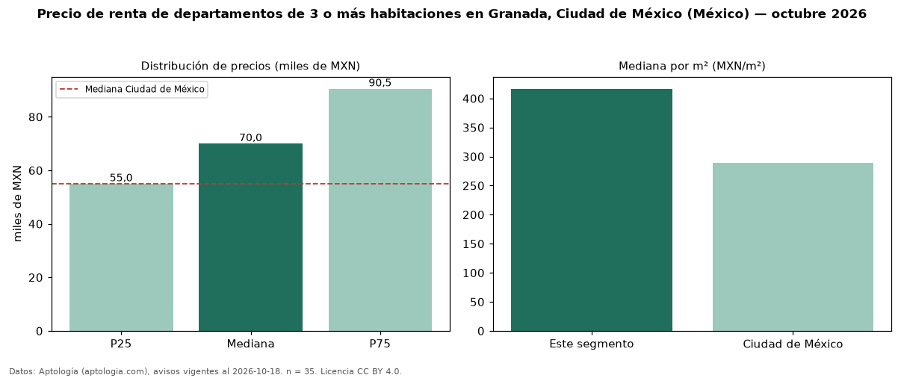

Precio de renta de departamentos de 3 o más habitaciones en Granada, Ciudad de México (México) — octubre 2026
En Granada, Ciudad de México (México), la mediana de canon mensual de departamentos de 3 o más habitaciones es MXN 70.000, según 35 avisos vigentes. Eso es 27 % por encima de la mediana de Ciudad de México para departamentos de 3 o más habitaciones (MXN 55.000). Por metro cuadrado, la mediana es MXN 417/m² al mes (n = 35 avisos con área), 44 % por encima de Ciudad de México (MXN 289/m²). Son 28 % de los 124 avisos de departamentos en renta de la zona, cuya mediana general es MXN 45.000 (+56 %). El área mediana anunciada es 168 m². La mitad central de los avisos va de MXN 55.002 a MXN 90.500 (razón 1,6), una dispersión moderada. Datos: Aptología (aptologia.com), CC BY 4.0 — https://www.aptologia.com/. Archivos: PDF, CSV con las cifras y gráfica PNG.

| Avisos únicos | 35 |
|---|---|
| Percentil 25 | COP 55.001 |
| Mediana | COP 70.000 |
| Percentil 75 | COP 90.500 |
| Mediana por m² | COP 416 |
Fuente: avisos vigentes de portales inmobiliarios recopilados por Aptología, deduplicados (mínimo 30 avisos únicos por celda). Precios pedidos, no cerrados. Fecha: 2026-10-18.